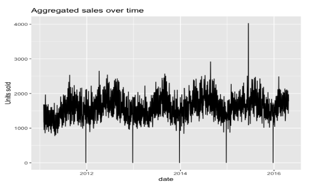
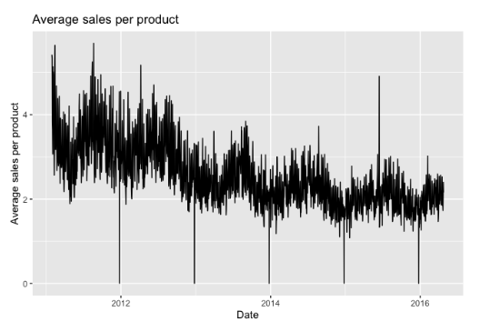
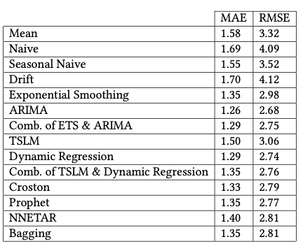

Sales Time Series Forecasting
Dec 2021 ~ MSc Course "Applied Forecasting in Complex Systems"
Length: 2w (at 0.5 FTE)
Programming language: R (fpp2, fpp3, ggplot2, tsibble, ggfortify, zoo, fable.prophet)
Data:
- Calendar data, containing information about the dates on which products were sold
(e.g. holidays, day of the week)
- Sales data, which contains the historical daily unit sales data per product
- Price data, that has information about the price of the products sold
Problem description:
Forecast daily sales for 28 days in the future of 823 products sold in a Walmart store
Approach:
Initially, the datasets were explored, merged, and split into train and test sets. In
the picture below, one can see the aggregated sales of all the products over time. It is clear
from this image that the sales have a yearly seasonality with a slightly upper trend. Moreover,
there is a drastic drop at the end of each year, which might be because the store was closed.

Although the total number of units sold per day follows a slightly upwards trend,
the upcoming figure shows that the average number of sales per product decline every year.
This implies that other products are introduced over time, and their sales cannibalize the old ones.

In order to assess the performance of the forecasting algorithms, three models were designed
as a baseline, namely a mean, a naive, and a seasonal naive model. Then the following models
were implemented: Exponential Smoothing, ARIMA, Linear Time Series Regression Model (TSLM),
Dynamic Regression, Croston, Prophet, NNETAR (feed-forward Neural Network with one hidden
layer that takes lagged training data as input), and Bagging Exponential Smoothing. Later,
the forecasts of multiple models were combined because different models capture distinct
aspects of the data. However, the complicated models were omitted from these combinations as
they are too computationally expensive.
Results:
In the table below, one can see the MAE and RMSE of the models measured on the test data. The
best scores were registered by ARIMA, despite being a univariate model that ignores most of
the variation of the seasonality. As expected, the baseline models performed the worst, with
MAE over 1,5 and RMSE over 3. On the other hand, the complex models, Prophet, NNETAR, and
Bagging, did not meet the expectations in terms of performance and produced results just over
the baseline but under the other models and combinations of models.
